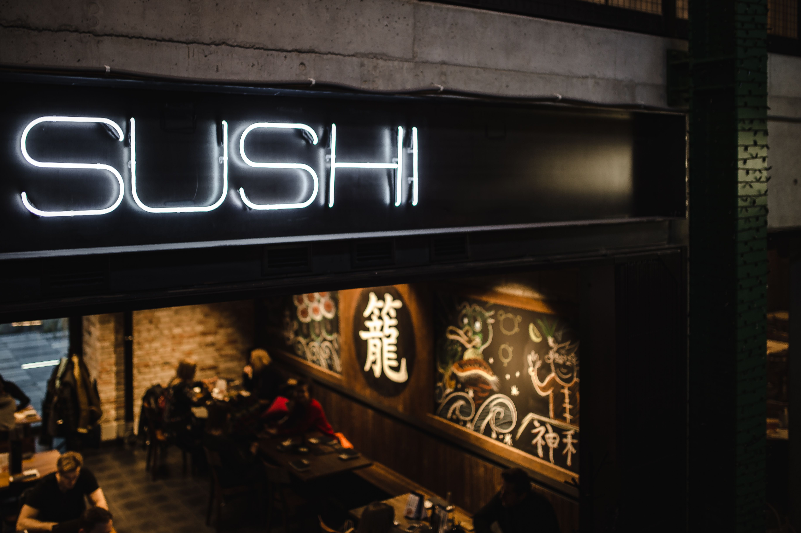

Sushi maison : le maki California, facile et délicieux !
"Envie de régaler vos papilles sans sortir de chez vous ? Découvrez notre recette simple et efficace pour réaliser de délicieux makis California. Un classique revisité à votre goût !"
Voir plus
Top 10 des sushis à essayer au moins une fois dans sa vie
"Vous êtes un passionné de sushi ? Ce top 10 est fait pour vous ! Découvrez des créations originales et savoureuses qui vont vous faire voyager au Japon."
Voir plus

Nouveau sushi bar sur la rue Saint-Jean : une adresse à ne pas manquer !
"Un nouveau vent de fraîcheur souffle sur la rue Saint-Jean ! Le dernier-né des sushi bars montréalais, qui promet de vous faire voyager au cœur du Japon.
Voir plusArticle par Ismaïl Belayachia
Article par Ismaïl Belayachia
Article par Ismaïl Belayachia